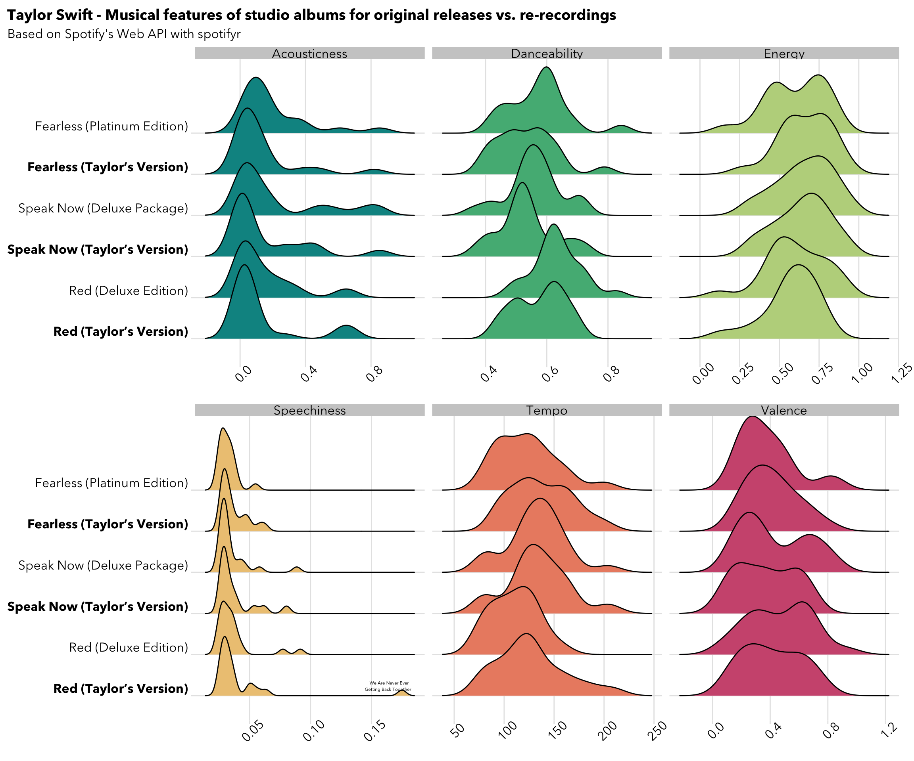

library(tidyverse)
library(spotifyr)
library(ggridges)
library(RColorBrewer)
# Stored API code in config folder and added to gitignore file
source("./config.R")
# Access API username + id
Sys.setenv(SPOTIFY_CLIENT_ID = spotify_id)
Sys.setenv(SPOTIFY_CLIENT_SECRET = spotify_code)
spotify_access_token <- get_spotify_access_token()
spotify_id <- function(artist_name) {
# Removed print so there is no echo in Quarto doc
artist_id <- search_spotify(artist_name, type = "artist") %>%
select(id) %>%
slice(1) %>%
as.character()
return(artist_id)
}
tswift_id <- spotify_id("Taylor Swift")
# Pull Taylor's music
tswift_spotify <- spotifyr::get_artist_audio_features(
artist = tswift_id,
include_groups = "album",
authorization = spotify_access_token
)
# Filter for Taylor's Version + Originals
taylors_version <- tswift_spotify %>%
filter(grepl("Taylor's Version", album_name) | grepl("Red", album_name) | grepl("Fearless", album_name)) %>%
filter(!grepl("International", album_name)) %>%
filter(!grepl("From The Vault", track_name))
# Exploring speechiness outlier
tv_annote <- taylors_version %>%
filter(grepl("Red", album_name)) %>%
select(album_name, track_name, value = speechiness) %>%
arrange(-value) %>%
mutate(metric = "speechiness",
album_name = paste0("<b>", album_name, "</b>")) %>%
slice_head(n=1)
# Added some factoring and text decoration
taylors_version |>
mutate(album_name = ifelse(grepl("Taylor's Version", album_name), paste0("<b>", album_name, "</b>"), album_name),
album_name = factor(album_name, c("Red (Deluxe Edition)", "<b>Red (Taylor's Version)</b>", "Fearless (Platinum Edition)", "<b>Fearless (Taylor's Version)</b>"))
) %>%
tidyr::pivot_longer(cols = c("valence","tempo","danceability","energy", "speechiness", "acousticness"), names_to = "metric") |>
ggplot(aes(x = value, y = album_name, fill=factor(metric))) +
geom_density_ridges(show.legend = FALSE) +
theme_ridges() +
labs(title = "Taylor Swift - Musical features of studio albums for original releases vs. re-recordings",
subtitle = "Based on Spotify's Web API with spotifyr",
y=NULL,
x=NULL)+
geom_text(data=tv_annote, label="We Are Never Ever \nGetting Back Together", vjust=-0.5, hjust=0.8, family="Avenir", size=1.5) +
facet_wrap(~metric, scales = "free_x", nrow = 2,
labeller = as_labeller(
c(`danceability`="Danceability",
`energy` = "Energy",
`acousticness` = "Acousticness",
`speechiness` = "Speechiness",
`tempo` = "Tempo",
`valence` = "Valence")
))+
rcartocolor::scale_fill_carto_d(palette="Temps") +
theme(plot.title.position = "plot",
axis.text.x = element_text(angle=45),
text = element_text(family="Avenir Next"),
axis.text.y=ggtext::element_markdown())